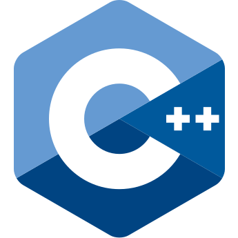
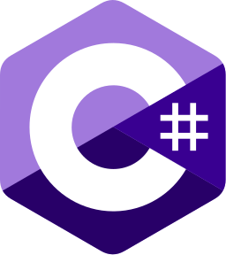

About Website
Welcome to my homepage! I'm Joshua Shuller.
This is a static website that I have mainly to toy around with, but really because my other hosting plan has reached it's CPU limit. I wanted to also provide some info about myself, just in case. I'm not anti-social, but I'm also not extremely social. As a result, I haven't jumped onto the regular social media bandwagons.
Apologies if the website is sluggish. I just thought it would be fun to use javascript to generate mountains, rocks and stars instead of generating static files for better performance.
Background and Early Life
I grew up in Oklahoma, USA. As a child, I remember that my brother was the computer nerd, and I was the lego nerd.
I did not want to go to university right after I completed high school. Instead, I ended up homeless and then living with a very nice family of a friend in Tampico, Mexico. After a breif time there, working with the family, me and some others went back to the USA. Walking through fields and on traintracks, sleeping under the stars and whatnot.
I finally came back home, and I decided that university didn't sound so bad, afterall. That's where I fell in love with computer programming. I started coding all the time, and reading all the books I had time for.
By the time I found an office job, I had already started independant contracting. The independant contracting work actually paid about the same as the first office job that I took. So I ended up quiting and continued doing independant contracting for various companies (including the one that I had been hired at). And then I went to Asia.
In my thirties, I used to love cycling around and hiking around in Asia. I used to, but I still do, too. But nowadays, I'm mostly around the house, working on something or the other, or watering the plants.
Programming
With over two decades spent building software, I've traded in my youthful idealism for pragmatic solutions and a touch of wisdom and grey hairs. My passion lies in the intricate world of code, crafting solutions that bring ideas to fruition.
My toolbelt mainly holds
- Java Java was my first programming love. It was the primary language taught in my university. I vividly recall the excitement of believing I had devised a novel sorting algorithm, only to discover in my subsequent data structures course that I had merely reinvented bucket sort. My experience with Java extends beyond the academic realm into both personal and professional domains. However, it is my personal projects that are more interesting to me. These projects span a wide array of fascinating endeavors, including robotics, image processing video input from cameras for 3D reconstruction, and creating applets with equally diverse functions such as text editing (better than the old notepad), stock market graphing, etc.
- PHP I acquired proficiency in PHP when I started doing contract work. Better than waiting tables! With my dreams of java development temporarily crushed, I was rescued by PHP. The bulk of my professional experience revolves around PHP, encompassing a wide range of web applications. These include online personality testing and evaluation, prescription drug certification systems for medical professionals, x-ray technician records management, questionnaire applications, bid, quote, and booking management systems, online stores, payment gateways for credit card processing, and more.
- MySQL I've gained proficiency in MySQL through my involvement in various projects where it served as the primary backend database solution. While my expertise lies predominantly in development, MySQL has been a fundamental component of many of my projects, providing robust storage and retrieval capabilities for a wide range of data-driven applications. Whether managing user profiles and preferences, storing transactional data for e-commerce platforms, or implementing complex data structures for healthcare records management systems, MySQL has consistently proven its reliability and scalability in handling diverse data requirements (until one starts doing joins on tables containing more than a few thousand rows of data, that is). My experience with MySQL extends beyond mere database administration to encompass optimizing queries, ensuring data integrity, and implementing efficient indexing strategies to enhance application performance and user experience.
- HTML & CSS I possess strong skills in HTML and CSS, the foundational languages of web development. While HTML may seem straightforward, its role in structuring web content is essential for creating well-organized and accessible websites. As for CSS, while I may start with existing styles and templates, I excel in refining and customizing them to achieve visually appealing and user-friendly designs. While HTML and CSS may be considered foundational, their mastery is critical for crafting engaging and professional web experiences.
- C & C++  Honorable mention: I don't have any professional experience in C and C++, but I did get to utilize it quite a bit in university. It's not exactly like Java or C#, but you can make it almost the same as Java with pointers using wrappers. I did all sorts of fun projects in C and C++. One of them was a video streaming chat application; it didn't perform quite as well as I liked (compressing PNG frames one at a time), but it was a ton of fun to make. Another really fun project I did was with the OU robotics club, where we color-coded the robots and put a camera over the robot arena to make it easier to program the robots from a faster PC than the onboard controller could handle, which never panned out, but it wasn't my fault, the hardware was lacking. Additionally, I wrote a server-side scripting language in C++, called "cgimorph." I used it on my personal linux website before I took a deep dive into PHP.
- JavaScript I've been immersed in JavaScript since my early days of creating websites during university. Initially, it was employed to enrich user experiences, adding interactive elements to web pages. However, as JavaScript became increasingly prevalent across web browsers and evolved into a powerful language in its own right, my appreciation for its capabilities deepened. Today, I rely on JavaScript extensively for numerous facets of web application development. Its versatility allows me to leverage my expertise in object-oriented programming, enabling me to tackle a wide array of tasks with confidence and efficiency.
- C#  I didn't learn C# and .NET until around 2020. Fortunately, it's very similar to Java, so adapting to it was quite easy for me. The most notable difference, in my experience, lies in the threading models. While there are certainly many other nuanced differences between the two languages, they can sometimes be easier to recognize than to recall and enumerate. Similar to my professional experience with Java, much of my professional experience with C# involves creating backend applications for performing scheduled or trigger-based data processing tasks, such as data scraping and scheduled rebuilding of data files. Additionally, I've embarked on personal projects using .NET to develop Windows applications, which has been super easy compared to the old C++ Windows API I used during my university days — it's barely an inconvenience. Furthermore, I've utilized C# in various UiPath RPA projects.
While I enjoy the challenge of tackling complex projects head-on, I also recognize the value of teamwork. I'm constantly working on refining my communication skills to collaborate more effectively. My ideal work environment blends independent initiative with open communication and collaboration. I can seamlessly navigate between these modes, ensuring efficient progress while remaining open to valuable input and feedback.
In hind-sight, regarding my childhood lego ambitions, programming is a lot like playing with legos:
- You think of the overall design first, and have an end goal.
- Then you enumerate the tasks recursively, and consider resources, or if you have the right lego pieces, as you go along if one has the flexability.
- Then you come up with an approach to build it, one task at a time. Each one of those little tasks is the fun part.
- In legos, you can start with the most size-determining parts and expand from there. Then you can start expanding from that. It's often similar in programming - if there's part with undetermined input and output, you might start with that. Or, if the most determining part is the user-interface then you can just start from there and go top-down.
- And in the end, you either end-up with one of the coolest lego robots ever, or another one of those Nicolas Cage movies.
Contact
Please feel free to contact me. Email is preferred.
Kind regards,
Joshua Shuller